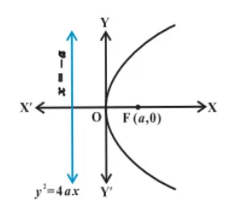

| \[Equation\] | \[Graph\] | \[Focus\] | \[Length\space of\space LR\] | \[Equation\space of\space Directrix\] | \[Equation\space of\space Axis\] |
|---|---|---|---|---|---|
| \[y^2=4ax\] |  | \[(a,0)\] | \[4a\] | \[x=-a\] | \[y=0\] |
| \[y^2=-4ax\] | \[(-a,0)\] | \[4a\] | \[x=a\] | \[y=0\] | |
| \[x^2=4ay\] | \[(0,a)\] | \[4a\] | \[y=-a\] | \[x=0\] | |
| \[x^2=-4ay\] |  |
\[(0,-a)\] | \[4a\] | \[y=a\] | \[x=0\] |
Equations of Tangent of all Parabolas in slope form
| \[Equations\space of\] \[Parabola\] |
\[Point\space of\space contact\space in\] \[\space terms\space of\space slope(m)\] |
\[Equation\space of\space tangent\space in\] \[\space terms\space of\space slope(m)\] |
\[Condition\space of\space Tangency\] |
|---|---|---|---|
| \[y^2=4ax\] | \[(\frac{a}{m^2},\frac{2a}{m})\] | \[y=mx+\frac{a}{m}\] | \[c=\frac{a}{m}\] |
| \[y^2=-4ax\] | \[(-\frac{a}{m^2},-\frac{2a}{m})\] | \[y=mx-\frac{a}{m}\] | \[c=-\frac{a}{m}\] |
| \[x^2=4ay\] | \[(2am,am^2)\] | \[y=mx-am^2\] | \[c=-am^2\] |
| \[x^2=-4ay\] | \[(-2am,am^2)\] | \[y=mx+am^2\] | \[c=am^2\] |
Equations of Normal of all Parabolas in slope form
| \[Equations\space of\] \[Parabola\] |
\[Point\space of\space contact\space in\] \[\space terms\space of\space slope(m)\] |
\[Equation\space of\space normal\space in\] \[\space terms\space of\space slope(m)\] |
\[Condition\space of\space Normality\] |
|---|---|---|---|
| \[y^2=4ax\] | \[(am^2,-2am)\] | \[y=mx-2am-am^3\] | \[c=-2am-am^3\] |
| \[y^2=-4ax\] | \[(am^2,2am)\] | \[y=mx+2am+am^3\] | \[c=2am+am^3\] |
| \[x^2=4ay\] | \[(-\frac{2a}{m},\frac{a}{m^2})\] | \[y=mx+2a+\frac{a}{m^2}\] | \[c=2a+\frac{a}{m^2}\] |
| \[x^2=-4ay\] | \[(\frac{2a}{m},-\frac{a}{m^2})\] | \[y=mx-2a-\frac{a}{m^2}\] | \[c=-2a-\frac{a}{m^2}\] |
Director Circle of all Parabolas
| \[Equations\space of\space Parabola\] | \[Equation\space of\space Director\space Circle\] |
|---|---|
| \[y^2=4ax\] | \[x\,+a\space=\,0\] |
| \[y^2=-4ax\] | \[x\,-a\space=\,0\] |
| \[x^2=4ay\] | \[y\,+a\space=\,0\] |
| \[x^2=-4ay\] | \[y\,-a\space=\,0\] |